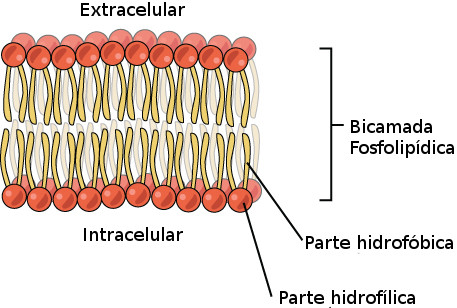
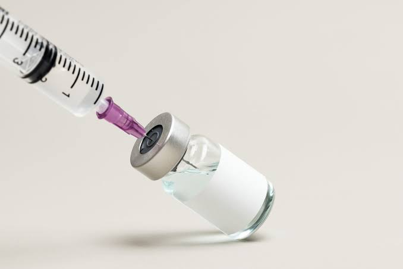

Os lipídios são moléculas orgânicas que incluem gorduras,
óleos, ceras e esteroides. São pouco solúveis em água e
desempenham funções importantes nos organismos, como
armazenamento de energia, composição das membranas celulares
e proteção térmica.
Gorduras e óleos
As gorduras e os óleos são formados principalmente por
triglicerídeos. Eles funcionam como reserva de energia
e ajudam no isolamento térmico. Em geral, as gorduras
são sólidas à temperatura ambiente, enquanto muitos
óleos são líquidos.
Fosfolipídios

Os fosfolipídios são componentes fundamentais das
membranas celulares. Eles possuem uma região que interage
com a água e outras regiões que evitam esse contato,
formando uma bicamada que separa o interior da célula
do ambiente externo.
Esteroides

Os esteroides são um grupo de lipídios que inclui o
colesterol e alguns hormônios. O colesterol participa
da composição das membranas celulares e é utilizado
pelo organismo na produção de determinados hormônios.
Principais funções dos lipídios
Reserva energética: armazenam energia
que pode ser utilizada pelo organismo quando necessário.
Isolamento térmico: ajudam a reduzir
a perda de calor em diversos animais.
Proteção: contribuem para proteger órgãos
contra impactos.
Composição celular: os fosfolipídios
participam da formação das membranas celulares.
Regulação: alguns lipídios, como certos
hormônios esteroides, participam da regulação de funções
do organismo.
Lipídios na alimentação e na saúde
Os lipídios fazem parte de uma alimentação equilibrada, pois
fornecem energia, ajudam na absorção de vitaminas e participam
do funcionamento do organismo.
Porém, é importante manter uma alimentação equilibrada,
pois o consumo excessivo de determinados tipos de gordura
pode prejudicar a saúde.
Você sabia?
Os lipídios fornecem aproximadamente 9 quilocalorias por
grama, mais que o dobro da energia fornecida por um grama
de carboidratos ou proteínas. Por isso, são importantes
para o armazenamento de energia no organismo.
Quer saber mais?
Curiosidade sobre os lipídios
Os lipídios fazem parte das membranas celulares e também
ajudam no armazenamento de energia e no isolamento térmico.